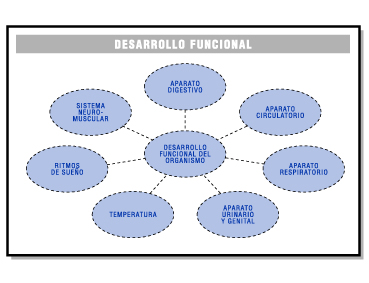

|
¿Cuánto duerme un niño recién nacido? ¿Y una niña de tres meses?... Es un hecho que las horas y ritmos de sueño no son una constante a lo largo de la etapa infantil. Veamos por último, otros aspectos que tenemos que tener en cuenta en el desarrollo funcional:
|
|  |
| SIRIUS. Estándar. Elaboración propia. |